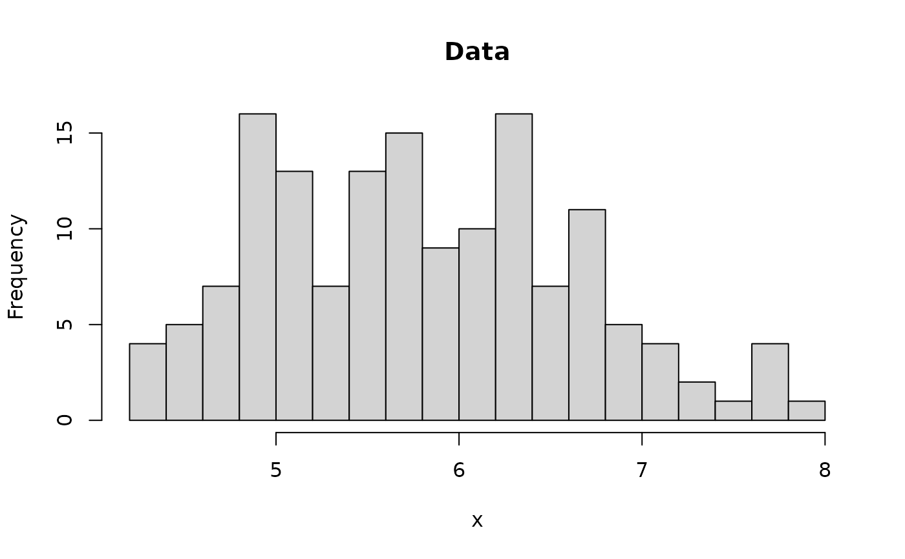
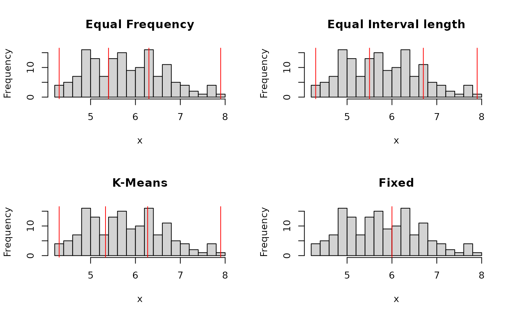

This function implements several basic unsupervised methods to convert a continuous variable into a categorical variable (factor) using different binning strategies. For convenience, a whole data.frame can be discretized (i.e., all numeric columns are discretized).
Usage
discretize(
x,
method = "frequency",
breaks = 3,
labels = NULL,
include.lowest = TRUE,
right = FALSE,
dig.lab = 3,
ordered_result = FALSE,
infinity = FALSE,
onlycuts = FALSE,
categories = NULL,
...
)
discretizeDF(df, methods = NULL, default = NULL)Arguments
- x
a numeric vector (continuous variable).
- method
discretization method. Available are:
"interval"(equal interval width),"frequency"(equal frequency),"cluster"(k-means clustering) and"fixed"(categories specifies interval boundaries). Note that equal frequency does not achieve perfect equally sized groups if the data contains duplicated values.- breaks, categories
either number of categories or a vector with boundaries for discretization (all values outside the boundaries will be set to NA).
categoriesis deprecated, usebreaksinstead.- labels
character vector; labels for the levels of the resulting category. By default, labels are constructed using "(a,b]" interval notation. If
labels = FALSE, simple integer codes are returned instead of a factor..- include.lowest
logical; should the first interval be closed to the left?
- right
logical; should the intervals be closed on the right (and open on the left) or vice versa?
- dig.lab
integer; number of digits used to create labels.
- ordered_result
logical; return a ordered factor?
- infinity
logical; should the first/last break boundary changed to +/-Inf?
- onlycuts
logical; return only computed interval boundaries?
- ...
for method "cluster" further arguments are passed on to
kmeans.- df
data.frame; each numeric column in the data.frame is discretized.
- methods
named list of lists or a data.frame; the named list contains lists of discretization parameters (see parameters of
discretize()) for each numeric column (see details). If no discretization is specified for a column, then the default settings fordiscretize()are used. Note: the names have to match exactly. If a data.frame is specified, then the discretization breaks in this data.frame are applied todf.- default
named list; parameters for
discretize()used for all columns not specified inmethods.
Value
discretize() returns a factor representing the
categorized continuous variable with
attribute "discretized:breaks" indicating the used breaks or and
"discretized:method" giving the used method. If onlycuts = TRUE
is used, a vector with the calculated interval boundaries is returned.
discretizeDF() returns a discretized data.frame.
Details
Discretize calculates breaks between intervals using various methods and
then uses base::cut() to convert the numeric values into intervals
represented as a factor.
Discretization may fail for several reasons. Some reasons are
A variable contains only a single value. In this case, the variable should be dropped or directly converted into a factor with a single level (see factor).
Some calculated breaks are not unique. This can happen for method frequency with very skewed data (e.g., a large portion of the values is 0). In this case, non-unique breaks are dropped with a warning. It would be probably better to look at the histogram of the data and decide on breaks for the method fixed.
discretize only implements unsupervised discretization. See
arulesCBA::discretizeDF.supervised() in package arulesCBA
for supervised discretization.
discretizeDF() applies discretization to each numeric column.
Individual discretization parameters can be specified in the form:
methods = list(column_name1 = list(method = ,...), column_name2 = list(...)).
If no discretization method is specified for a column, then the
discretization in default is applied (NULL invokes the default method
in discretize()). The special method "none" can be specified
to suppress discretization for a column.
See also
base::cut(),
arulesCBA::discretizeDF.supervised().
Other preprocessing:
hierarchy,
itemCoding,
merge(),
sample()
Examples
data(iris)
x <- iris[, 1]
### look at the distribution before discretizing
hist(x, breaks = 20, main = "Data")

def.par <- par(no.readonly = TRUE) # save default
layout(mat = rbind(1:2, 3:4))
### convert continuous variables into categories (there are 3 types of flowers)
### the default method is equal frequency
table(discretize(x, breaks = 3))
#>
#> [4.3,5.4) [5.4,6.3) [6.3,7.9]
#> 46 53 51
hist(x, breaks = 20, main = "Equal Frequency")
abline(v = discretize(x,
breaks = 3,
onlycuts = TRUE
), col = "red")
# Note: the frequencies are not exactly equal because of ties in the data
### equal interval width
table(discretize(x, method = "interval", breaks = 3))
#>
#> [4.3,5.5) [5.5,6.7) [6.7,7.9]
#> 52 70 28
hist(x, breaks = 20, main = "Equal Interval length")
abline(v = discretize(x,
method = "interval", breaks = 3,
onlycuts = TRUE
), col = "red")
### k-means clustering
table(discretize(x, method = "cluster", breaks = 3))
#>
#> [4.3,5.33) [5.33,6.27) [6.27,7.9]
#> 46 53 51
hist(x, breaks = 20, main = "K-Means")
abline(v = discretize(x,
method = "cluster", breaks = 3,
onlycuts = TRUE
), col = "red")
### user-specified (with labels)
table(discretize(x,
method = "fixed", breaks = c(-Inf, 6, Inf),
labels = c("small", "large")
))
#>
#> small large
#> 83 67
hist(x, breaks = 20, main = "Fixed")
abline(v = discretize(x,
method = "fixed", breaks = c(-Inf, 6, Inf),
onlycuts = TRUE
), col = "red")

par(def.par) # reset to default
### prepare the iris data set for association rule mining
### use default discretization
irisDisc <- discretizeDF(iris)
head(irisDisc)
#> Sepal.Length Sepal.Width Petal.Length Petal.Width Species
#> 1 [4.3,5.4) [3.2,4.4] [1,2.63) [0.1,0.867) setosa
#> 2 [4.3,5.4) [2.9,3.2) [1,2.63) [0.1,0.867) setosa
#> 3 [4.3,5.4) [3.2,4.4] [1,2.63) [0.1,0.867) setosa
#> 4 [4.3,5.4) [2.9,3.2) [1,2.63) [0.1,0.867) setosa
#> 5 [4.3,5.4) [3.2,4.4] [1,2.63) [0.1,0.867) setosa
#> 6 [5.4,6.3) [3.2,4.4] [1,2.63) [0.1,0.867) setosa
### discretize all numeric columns differently
irisDisc <- discretizeDF(iris, default = list(
method = "interval", breaks = 2,
labels = c("small", "large")
))
head(irisDisc)
#> Sepal.Length Sepal.Width Petal.Length Petal.Width Species
#> 1 small large small small setosa
#> 2 small small small small setosa
#> 3 small large small small setosa
#> 4 small small small small setosa
#> 5 small large small small setosa
#> 6 small large small small setosa
### specify discretization for the petal columns and don't discretize the others
irisDisc <- discretizeDF(iris,
methods = list(
Petal.Length = list(
method = "frequency", breaks = 3,
labels = c("short", "medium", "long")
),
Petal.Width = list(
method = "frequency", breaks = 2,
labels = c("narrow", "wide")
)
),
default = list(method = "none")
)
head(irisDisc)
#> Sepal.Length Sepal.Width Petal.Length Petal.Width Species
#> 1 5.1 3.5 short narrow setosa
#> 2 4.9 3.0 short narrow setosa
#> 3 4.7 3.2 short narrow setosa
#> 4 4.6 3.1 short narrow setosa
#> 5 5.0 3.6 short narrow setosa
#> 6 5.4 3.9 short narrow setosa
### discretize new data using the same discretization scheme as the
### data.frame supplied in methods. Note: NAs may occure if a new
### value falls outside the range of values observed in the
### originally discretized table (use argument infinity = TRUE in
### discretize to prevent this case.)
discretizeDF(iris[sample(1:nrow(iris), 5), ], methods = irisDisc)
#> Sepal.Length Sepal.Width Petal.Length Petal.Width Species
#> 69 6.2 2.2 medium wide versicolor
#> 49 5.3 3.7 short narrow setosa
#> 25 4.8 3.4 short narrow setosa
#> 39 4.4 3.0 short narrow setosa
#> 117 6.5 3.0 long wide virginica